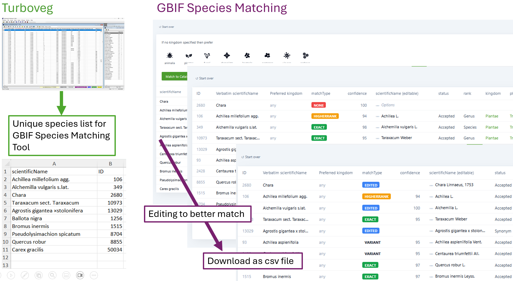
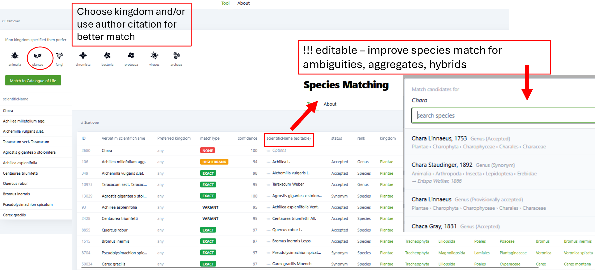
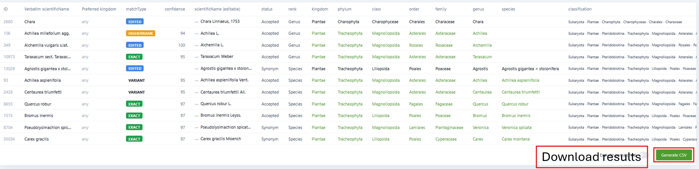

## Required packages
library (foreign)
library (dplyr)
library (readxl)
library (sf)
library (stringr)
library (tidyr)Export to GBIF
Introduction
This tutorial describes how to export vegetation plots from the Czech Vegetation Database to GBIF as a sampling event dataset.
The main inputs are the original .dbf files as generated by the Turboveg2 program, in which the database is stored. The output will consist of three .txt files – events, occurrences and references – containing data in a form ready for mapping to the GBIF Sampling Event Core through the Integrated Publishing Toolkit (IPT; https://www.gbif.org/ipt).
Because each vegetation database has its own specifics, this tutorial is not intended to serve as a universal, step-by-step manual applicable to every database. It rather provides an example workflow that can be adapted to the particular characteristics of each database.
You can download the training database (1000 vegetation plots from the CzechVeg DB) and practise following the procedure below.
Input files
From Turboveg2*:
- tvabund (dbf) = species data
- tvhabita (dbf) = header data
- species (dbf) = Turboveg2 species list
- SYNTAXA (dbf) = list of syntaxa
- tvauthor (dbf) = list of authors
- tvrefenc (dbf) = list of bibliographic references
- TVSCALE (dbf) = cover scales
- tv.shp** (shp) = shapefile containing point locations of the input data
External files:
- spec.converter (xlsx) = list of species scientific names from the input data, supplemented with scientific name authorships and other taxonomic classification variables; as obtained after preprocessing taxonomic nomenclature using the Species Matching Tool provided by GBIF
- EUNIS (csv) = file containing classification of the input vegetation plots to EUNIS habitat units; as obtained from Turboveg3 (description of EUNIS expert classification https://zenodo.org/records/16895007)
- eunis.names (xlsx) = list of codes and names of EUNIS habitats
*The objects above that we directly export from Turboveg2 can be uploaded from external files as well in any format. For example, if you have an external file containing literature references corresponding with your Turboveg2 database, prepare a tvreferenc.xlsx with columns REFERENCE (id), AUTHOR, YEAR (of publishing), TITLE, PUBLISHED (publicati on).
**In the Czech Vegetation Database, coordinates are stored in DDMMSS.SS format. For example, the coordinates 49°10′41.960″N, 16°34′10.738″E are stored as 491041.96 and 163410.74, respectively. Therefore, we use the coordinates from a shapefile exported from Turboveg 2. Alternatively, the coordinates can be converted to decimal degrees in R (https://czechveg.github.io/DataProcessingTutorial/turboveg_r.html#coordinates). For databases in which coordinates are stored in decimal-degree format, the values in the Longitude and Latitude fields can be used directly.
Preprocessing of taxonomic nomenclature
To ensure that the taxonomic nomenclature in our data matches that used by GBIF as closely as possible, we followed the steps below to preprocess the taxonomic names and prepare the external file that is later uploaded as spec.converter.
- Preparing a list of unique names
We extract all unique species names from our data and prepare a file containing the following fields: scientificName (with or without the author citation); kingdom (optional); and ID (optional). The resulting file is named GBIF_testdata_uniqueSL_forMatchingTool.txt. We use the Czech species list from Turboveg 2. The nomenclature is then further standardized according to the nomenclature presented in the latest edition of The Key to the Flora of the Czech Republic. This nomenclature, named here after the main editor, Kaplan, is used as the scientificName field in Step 2. - Matching names using the GBIF Species Matching Tool
The list of unique species names can be uploaded to the Species Matching Tool, which attempts to normalize each name in the file. For larger files, species matching can also be performed through the GBIF API. In June 2026, GBIF started to use the Catalogue of Life Extended Release (COL), ) as its official taxonomic backbone. - Reviewing taxonomic issues and flags
After the species list has been uploaded and matched against COL, the initial results may contain various taxonomic issues and flags (described here). The automatically generated matches can be reviewed and edited. Each uncertain or incorrectly matched name should be checked and normalized manually where necessary. The file GBIF_testspecies_withoutkingdom.csv can be used to test the GBIF Species Matching Tool; upload the file both with and without the kingdom field to compare the results.

- Handling species groups and hybrids
The GBIF taxonomic backbone is not able to match certain types of names, such as species aggregates (agg.), broad species concepts (s. lat.), or hybrids. In such cases, the names may be matched only to the species or genus level. Matching may be more successful when the name is present in COL. - Linking the matching results to the original data
The matching results are linked back to the original species list. For the occurrence data, the relevant fields are then selected and renamed according to the Darwin Core terms (see the procedure below). The complete set of columns is retained in GBIF_testdata_uniqueSL_clean.xlsx (to be uploaded as spec.converter).


Read input files to R
All files, except the shapefile, are stored in a folder named “input_files” within the R working directory. If a shapefile is used, its component files (including at least the .dbf, .prj, .shp, and .shx files) are stored in a subfolder named “shp”.
## Read DBF files into a list
dbf_files <- list.files(path = paste0(getwd(),"/input_files"), pattern = "\\.dbf$", full.names = T, ignore.case = T)
dbf_list <- lapply(dbf_files, function(f) {
st_read(f, quiet = T) %>% as.data.frame()
})
# st_read does not read any rows that you might have previously deleted from your dbf files in Turboveg2. The information about unread rows is given, e.g. “Re-reading with feature count reset from 1133 to 1131”
names (dbf_list) <- gsub("\\.dbf$", "", basename(dbf_files), ignore.case = T)
## Convert local encoding to UTF-8
dbf_list <- lapply(dbf_list, function(df) {
char_cols <- sapply(df, is.character)
df[char_cols] <- lapply(df[char_cols], function(col) iconv(col, from ="cp852", to ="UTF-8"))
return(df)
})
## Read other files
spec.converter <- read_excel (paste0(getwd(),"/input_files/GBIF_nomenclature_CZ_20260621IKuprMV.xlsx")) %>% as.data.frame()
shp_dir <- file.path(getwd(), "input_files", "shp")
shp_file <- list.files(shp_dir, pattern = "\\.shp$", full.names = T)
tv.shp <- st_read(shp_file)
EUNIS <- read.delim (paste0(getwd(),"/input_files/CzechVeg_TV3_EUNIS_20260810.csv"), sep = '\t')
eunis.names <- read_excel (paste0(getwd(),"/input_files/EUNIS-habitats-codes-and-names-2025-09.xlsx")) %>% as.data.frame()Translating header and species data to the GBIF format
Events
Column names for the event_gbif object to which header data will be transferred:
event.gbif_colnames <- c(
"eventID", "countryCode", "footprintWKT", "geodeticDatum", "decimalLongitude",
"decimalLatitude", "coordinateUncertaintyInMeters", "eventDate",
"samplingProtocol", "sampleSizeValue", "sampleSizeUnit", "syntaxonName",
"maximumElevationInMeters", "aspect", "inclinationInDegrees", "coverTotalInPercentage",
"coverTreesInPercentage", "coverShrubsInPercentage", "coverHerbsInPercentage",
"coverMossesInPercentage", "coverLichensInPercentage", "coverAlgaeInPercentage",
"coverLitterInPercentage", "coverWaterInPercentage", "coverRockInPercentage",
"mossesIdentified", "lichensIdentified", "treeLayerHeightInMeters", "shrubLayerHeightInMeters", "herbLayerHeightInCentimeters", "verbatimLocality", "habitat",
"RELEVE_NR"
)
event.gbif_nrow <- nrow(dbf_list$tvhabita)
event.gbif_ncol <- length(event.gbif_colnames)
event_gbif <- as.data.frame(matrix(nrow = event.gbif_nrow, ncol = event.gbif_ncol))
colnames(event_gbif) <- event.gbif_colnamesEvent ID should be a unique identifier for each sampling event. We therefore constructed it by combining the Global Index of Vegetation Databases ID of CzechVeg DB (EU-CZ-001) with Turboveg relevé numbers (which is the persistent identifier used in the CzechVeg DB).
event_gbif$eventID <- paste0("EU-CZ-001-", dbf_list$tvhabita$RELEVE_NR)
event_gbif$RELEVE_NR <- dbf_list$tvhabita$RELEVE_NR # original relevé number (= vegetation plot identifier) which will be useful here in next stepsNow, individual columns of event_gbif will be filled to match the GBIF format requirments:
## Coordinates
event_gbif$countryCode <- dbf_list$tvhabita$COUNTRY
coords <- st_coordinates(tv.shp)
event_gbif$footprintWKT <- paste0("POINT (", coords[,1]," ", coords[,2], ")")
event_gbif[,c("decimalLongitude","decimalLatitude")] <- coords[,1:2]
event_gbif$geodeticDatum <- "EPSG:4326"
# Replace NAs or other values representing NAs, such as 0 in this case, with empty strings ("") for GBIF
event_gbif <- event_gbif %>% mutate(
coordinateUncertaintyInMeters = if_else(
dbf_list$tvhabita$PRECISION == 0, "", as.character(dbf_list$tvhabita$PRECISION)
)
)
## Date
dates_char <- dbf_list$tvhabita$DATE
date_obj <- rep(as.Date(NA), length(dates_char))
# Turboveg2 formats (YYYYMMDD, YYYYMM, YYYY) are translated to standard formats (YYYY-MM-DD, YYYY-MM, YYYY)
idx_7_8 <- which(nchar(dates_char) %in% c(7, 8))
idx_6 <- which(nchar(dates_char) == 6)
idx_4 <- which(nchar(dates_char) == 4)
date_obj[idx_7_8] <- as.Date(dates_char[idx_7_8], format = "%Y%m%d")
date_obj[idx_6] <- as.Date(paste0(dates_char[idx_6], "01"), format = "%Y%m%d")
date_obj[idx_4] <- as.Date(paste0(dates_char[idx_4], "0101"), format = "%Y%m%d")
date_out <- character(length(dates_char))
date_out[idx_7_8] <- format(date_obj[idx_7_8], "%Y-%m-%d")
date_out[idx_6] <- format(date_obj[idx_6], "%Y-%m")
date_out[idx_4] <- format(date_obj[idx_4], "%Y")
date_out [is.na(date_out)] <- ""
event_gbif$eventDate <- date_out
## Cover scale
coverScale_df <- data.frame (SCALE_NR = dbf_list$tvhabita$COVERSCALE)
coverScale_df <- left_join (coverScale_df, dbf_list$TVSCALE [,c("SCALE_NR","SCALE_NAME")], by = "SCALE_NR")
coverScale_df$SCALE_NAME <- sub("Braun/Blanquet", "Braun-Blanquet", coverScale_df$SCALE_NAME, fixed = T)
coverScale_df$SCALE_NAME <- sub("Percentual scale", "Percentual", coverScale_df$SCALE_NAME, fixed = T)
event_gbif$samplingProtocol <- paste0("vegetation plot with ", coverScale_df$SCALE_NAME, " scale for cover") # GBIF verbal description of sampling protocol
event_gbif$samplingProtocol2 <- coverScale_df$SCALE_NAME # for later use
## Plot size
event_gbif$sampleSizeValue <- as.character(dbf_list$tvhabita$SURF_AREA)
event_gbif$sampleSizeValue [event_gbif$sampleSizeValue == "-1"] <- ""
event_gbif$sampleSizeUnit <- "square metre"
## Syntaxon based on the Czech Expert System
dbf_list$tvhabita <- dbf_list$tvhabita %>%
mutate(code_name = ifelse(!is.na(ESY_CODE) & !is.na(ESY_NAME), paste(ESY_CODE, ESY_NAME, sep = " - "), NA))
event_gbif$syntaxonName <- dbf_list$tvhabita$code_name
event_gbif$syntaxonName[is.na(event_gbif$syntaxonName)] <- ""
## Topography
dbf_list$tvhabita <- dbf_list$tvhabita %>%
mutate(
across(
c(ALTITUDE, EXPOSITION, INCLINATIO),
~ replace(as.character(.x), is.na(.x) | .x == "-1", "")
)
)
event_gbif$maximumElevationInMeters <- dbf_list$tvhabita$ALTITUDE
event_gbif$aspect <- dbf_list$tvhabita$EXPOSITION
event_gbif$inclinationInDegrees <- dbf_list$tvhabita$INCLINATIO
## Cover species groups
dbf_list$tvhabita$COV_TOTAL[dbf_list$tvhabita$COV_TOTAL == -1] <- ""
event_gbif$coverTotalInPercentage <- dbf_list$tvhabita$COV_TOTAL
dbf_list$tvhabita <- dbf_list$tvhabita %>%
mutate(across(
COV_TREES:COV_ROCK,
~ replace(as.character(.x), .x == -1 | .x == "-1", "")
))
event_gbif$coverTreesInPercentage <- dbf_list$tvhabita$COV_TREES
event_gbif$coverShrubsInPercentage <- dbf_list$tvhabita$COV_SHRUBS
event_gbif$coverHerbsInPercentage <- dbf_list$tvhabita$COV_HERBS
event_gbif$coverMossesInPercentage <- dbf_list$tvhabita$COV_MOSSES
event_gbif$coverLichensInPercentage <- dbf_list$tvhabita$COV_LICHEN
event_gbif$coverAlgaeInPercentage <- dbf_list$tvhabita$COV_ALGAE
event_gbif$coverLitterInPercentage <- dbf_list$tvhabita$COV_LITTER
event_gbif$coverWaterInPercentage <- dbf_list$tvhabita$COV_WATER
event_gbif$coverRockInPercentage <- dbf_list$tvhabita$COV_ROCK
dbf_list$tvhabita$MOSS_IDENT <- ifelse(dbf_list$tvhabita$MOSS_IDENT == "Y", "1",
ifelse(dbf_list$tvhabita$MOSS_IDENT == "N", "0", ""))
dbf_list$tvhabita$MOSS_IDENT [is.na(dbf_list$tvhabita$MOSS_IDENT)] <- ""
event_gbif$mossesIdentified <- dbf_list$tvhabita$MOSS_IDENT
dbf_list$tvhabita$LICH_IDENT <- ifelse(dbf_list$tvhabita$LICH_IDENT == "Y", "1",
ifelse(dbf_list$tvhabita$LICH_IDENT == "N", "0", ""))
dbf_list$tvhabita$LICH_IDENT [is.na(dbf_list$tvhabita$LICH_IDENT)] <- ""
event_gbif$lichensIdentified <- dbf_list$tvhabita$LICH_IDENT
## Vegetation layers height
dbf_list$tvhabita <- dbf_list$tvhabita %>%
mutate(across(
c(TREE_HIGH, SHRUB_HIGH, HERB_HIGH),
~ replace(as.character(.x), is.na(.x) | .x == -1 | .x == "-1", "")
))
event_gbif$treeLayerHeightInMeters <- dbf_list$tvhabita$TREE_HIGH
event_gbif$shrubLayerHeightInMeters <- dbf_list$tvhabita$SHRUB_HIGH
event_gbif$herbLayerHeightInCentimeters <- dbf_list$tvhabita$HERB_HIGH
## Locality
event_gbif$verbatimLocality <- "" # to be fixed soon
## EUNIS habitat type
EUNIS$Expert.classification[EUNIS$Expert.classification %in% c("~","")] <- NA
comma.delim <- unique(EUNIS$Expert.classification) %>% .[!is.na(.) & str_detect(., ",")]
EUNIS$Expert.classification[EUNIS$Expert.classification %in% comma.delim] <- NA
colnames(eunis.names) <- c("Expert.classification","eunis.name")
EUNIS <- left_join(EUNIS, eunis.names, by = "Expert.classification")
EUNIS <- EUNIS %>%
mutate(code_name = ifelse(!is.na(Expert.classification) & !is.na(eunis.name), paste(Expert.classification, eunis.name, sep = " - "), ""))
event_gbif <- left_join(event_gbif, EUNIS[,c("TV2.relevé.number","code_name")],by = c("RELEVE_NR" = "TV2.relevé.number"))
event_gbif$habitat <- event_gbif$code_name
event_gbif$code_name <- NULL